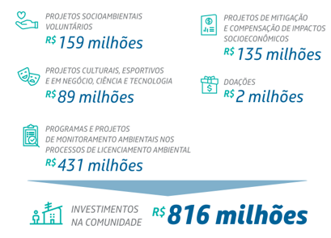
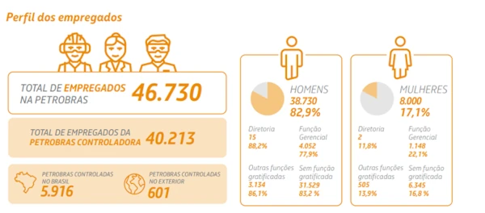
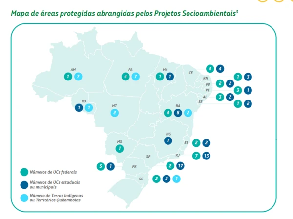
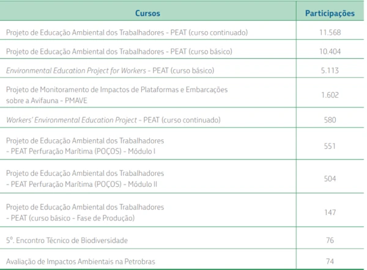

Contribuição à Sociedade
R$ 2,5 bilhões investidos em projetos sociais até 2024
Mais de 1,2 milhão de pessoas beneficiadas por programas de inclusão, cultura e esporte.
 Fonte: Relatório de Sustentabilidade Petrobras 2024Empregabilidade e Desenvolvimento Econômico
+150 mil empregos diretos e indiretos gerados
70% dos contratos firmados com fornecedores locais, promovendo o crescimento regional.
 Fonte: Relatório de Sustentabilidade Petrobras 2024Conservação de Áreas Naturais
+30 mil hectares de áreas protegidas e monitoradas
Parcerias ativas com ONGs e órgãos ambientais para preservação da biodiversidade.
 Fonte: Programa Petrobras SocioambientalInvestimento em Cursos sobre Biodiversidade
Mais de 120 cursos gratuitos oferecidos
Capacitação de mais de 10 mil participantes em temas de meio ambiente e sustentabilidade.
 Fonte: Iniciativa Petrobras Educação Ambiental